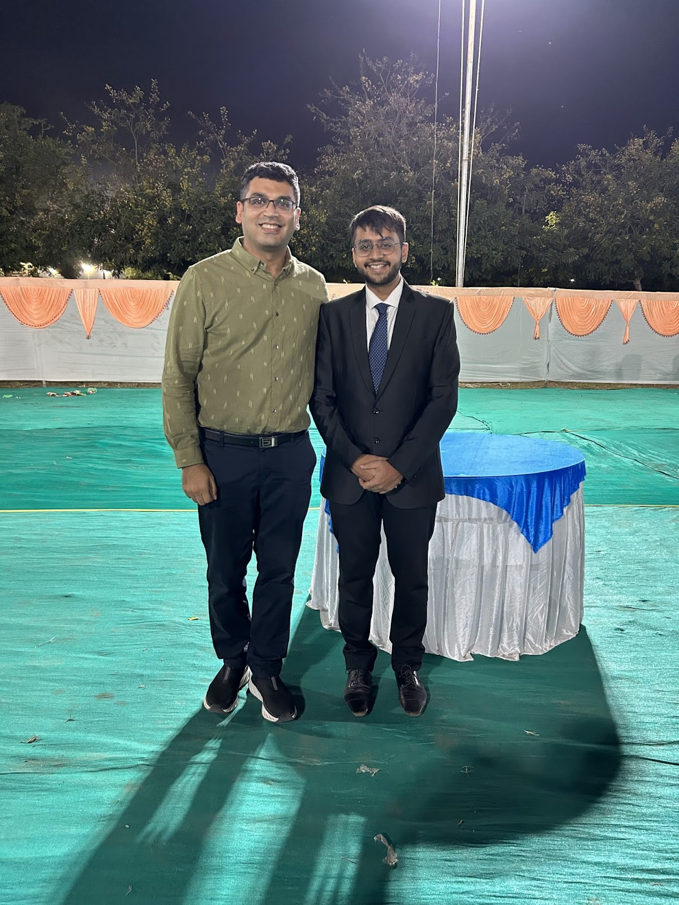

Detours can sometimes be the best part of the journey!
 Udaan 2023, IIT Gandhinagar (Farewell Party)
About me
Before I start sharing my journey at the lab, I would like to shout out to anyone out there looking to do some exciting work in Machine Learning under the best of mentors and who wants to unleash the best of his or her potential, this is the place - Prof. Nipun Batra’s Sustainability Lab at Indian Institute of Technology, Gandhinagar.
Having graduated with a B.Tech in Electrical Engineering with minors in Computer Science and Engineering from IITGN in July 2023, I am currently pursuing my Master’s In Electrical and Computer Engineering from Carnegie Mellon University, USA. My professional and personal learnings with the Sustainability Lab have helped me pursue my dream.
Sometimes, the detours are the best part of the journey!
It was the third year of my undergrad, I was looking for a Foreign Academic Summer Internship in Machine Learning or Computer Vision. I was having a hard time finding an internship. It was the same time I had enrolled myself in Prof. Batra’s Machine Learning (ML) Course. Believe me, he is the best when it comes to teaching. It was the first time in my undergraduate studies when I felt like going to a class 😊. And it was his teachings that made me knock on the doors of the Sustainability Lab. I first met Prof. Batra and asked him if he could help me get an internship. I had no thoughts then on a summer internship under him, and the rest is history. I was very disappointed about not getting a foreign research internship, and even though he didn’t know me, he was all willing to help me out. I had finally found a mentor in him. From the very same semester, I started working with the Lab and then onwards there was no looking back. And now whenever I think about my BTech, this lab was a big part of it.
I have worked on 4 different projects and some open-source contributions for one and a half years. When the entire world was going crazy behind deep neural networks, it was under him that I explored the probabilistic machine learning models. And got a whole new perspective on ML. My first-ever project was on Deep Gaussian Processes for Air Quality Inference, though this was a course project, it never felt that way. There was continuous guidance from him and his PhD Zeel Patel. Though we had limited time we were able to make significant contributions. We as undergrads (other collaborators Eshan Gujarathi, Saagar Parikh, and Sachin Yadav) were able to publish our work as an extended abstract at ACM India, 6th Joint International Conference on Data Science and Management of Data CODS-COMAD 2023. I also had the privilege of presenting this work at the conference, and to our surprise, we were the only undergrads who had published their work. We recently got one citation, hurray my H-Index is now 1 😊.
Deep Dive!
Building on my knowledge of Gaussian Processes (GPs), I delved deeper into the nitty-gritty of its working. In my third-year summer internship, I had the opportunity to work on Batched Gaussian Processes. It was this solo research that gave me a lot of confidence in myself and though it was difficult to understand the math behind GPs, Prof. Batra and other labmates were always there to help me out. Prof. Batra is extremely reachable, you just have to ask him and he will instantly set up a meeting and will explain everything with great passion every time. I just used to wonder at times, how passionate a person can be. The thing about this lab is that you don’t feel like you are working for the first time, so welcoming is the atmosphere. I still cherish the AB6 Workspace where we as a lab used to spend the entire day, have fun, and help each other. His feedback during research meetings might feel harsh at times but yes that always motivated me to work to the best of my potential. One of the best parts of working with this Lab is that Prof. Batra knows what our future goals are and accordingly assigns projects to students considering his/her interests. I still remember that he knew I was applying for a master’s and he put me on an application-based project and pushed me to publish a paper in AAAI or NeurIPS. Until then I had never even dreamt of such a publication.
And guess what I was successful in publishing my work on Non-Intrusive Load Monitoring (NILM) using Bayesian deep learning strategies like Gaussian Processes in the NeurIPS workshop on Gaussian Processes in 2023 (collaborator: Gautam Vashishtha). A lot of credit goes to Prof. Batra and PhD Zeel. It was my experience of GPs from the summer that helped me quickly get going with this tough problem. And this work of mine has to be the highlight of my BTech. This work not only molded me into a good researcher but also taught me numerous life lessons. Prof. Batra’s dedication in academia as well as in day-to-day life always motivated me to do better each day. Every time I used to go with some updates on the work done, he would always point out even the minutest details, you might feel does it even matter. But believe me, it does, this makes you perfect at what you do, not only in research! I learned how to write good papers, and how to do productive research. “Drawing conclusions or insights is the key to any research problem” - were always the words of Prof. Nipun Batra!
This project had lots of ups and downs but he always pushed me whenever I felt low and felt like the project was not heading anywhere. But you have to trust Prof. Batra and follow his advice especially when you feel everything is going down the spiral. Prof. Batra’s words still echo in my ears, never run behind publications, and don’t think much about the end goal. Just focus on your current work, set smaller milestones, and keep producing results and you will never know when you will have a flurry of publications. Isn’t this relevant to anything you do in life, just focus on the present! My last work with this lab was on Multi Output models for air quality inference. Every new project feels like a new challenge but when you have an excellent mentor and support in the lab the job is half done. By the beginning of this project, I started enjoying research. To touch on another aspect, I had never realized the importance of open-source contributions unless I joined this Lab. The excellent environment at the lab of always helping ML society, helped me make contributions to Dr. Kevin Murphy’s (Google Researcher) Book.
My Master’s applications
Any amount of words is not sufficient for the impact Prof. Batra and this lab had on my master’s application. Whether it be university selection, the application process, SoP, CV, or anything related he will always be there. I was just amazed by the way Prof. Batra reviewed my SOP and Resume word by word not only once but several times. I used to always get blunt feedback but that helped me prepare a strong application (studying today at one of the finest!). He always cares for his students, and even used to tell us to sleep well, focus on health, and then prioritize work. I have written more about the lessons I learned working with him, make sure you read that, if the above didn’t motivate you enough to join his lab.
Memories and friends I will cherish for life.
There used to be Lab dinners and there you will see the best of Prof. Batra :), I remember once he showed his mimicry skills, it was hilarious! On Lab outings, his “Delhi ka ladka” comes out and he is extremely jovial to talk with. The lab celebrations on paper publications or any achievements, Prof. Batra personally greeted us the very best during our farewell dinner and the Akshardham dinner visits will always be remembered! But the best part which makes me emotional every time I read is the personalized message in a book he gave each of his graduating students. And I have even carried that to the USA, that just makes me believe every time I feel low.
Finally, I will always miss having fun and working with Vibhuti Bansal, Eshan Gujarathi, Gautam Vashishtha, Saagar Parikh, Hitarth Gandhi, Progyan Das, Hetvi Shastri, Palak Purohit, Harsh Patel, Shivam Sahini, Sachin Yadav, Karm Patel, Hrushti Naik, Shreyashi Singh, and PhD Zeel Patel. I always miss lab meetings and learning from him. Thank you, Prof. Batra, Zeel, and other members of the lab for the wonderful memories and learnings. My experience at this lab has prepared me for my future goals! And I am sure if anytime I feel like I need some advice, Prof. Batra will just be a call away!
Aadesh Desai
Feel Free to contact me anytime.